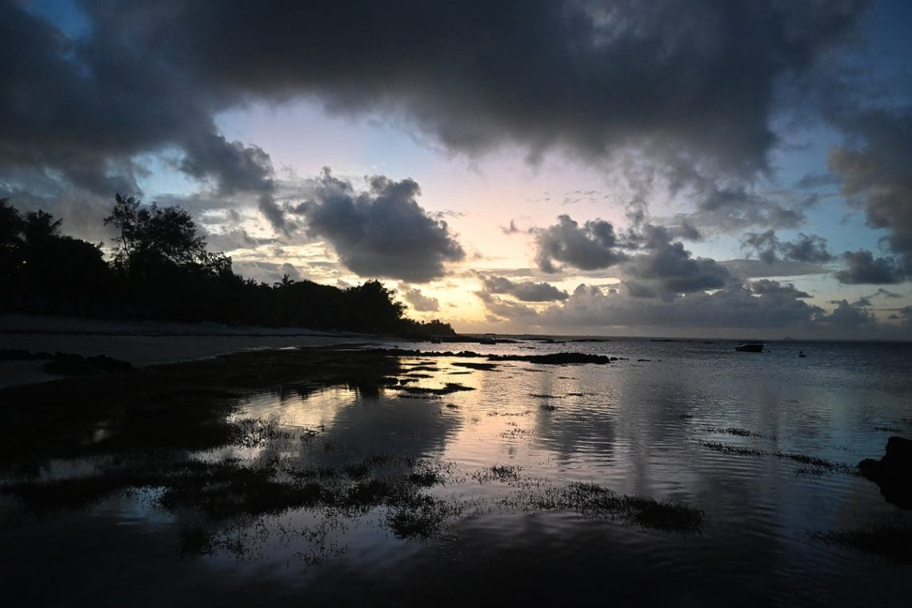
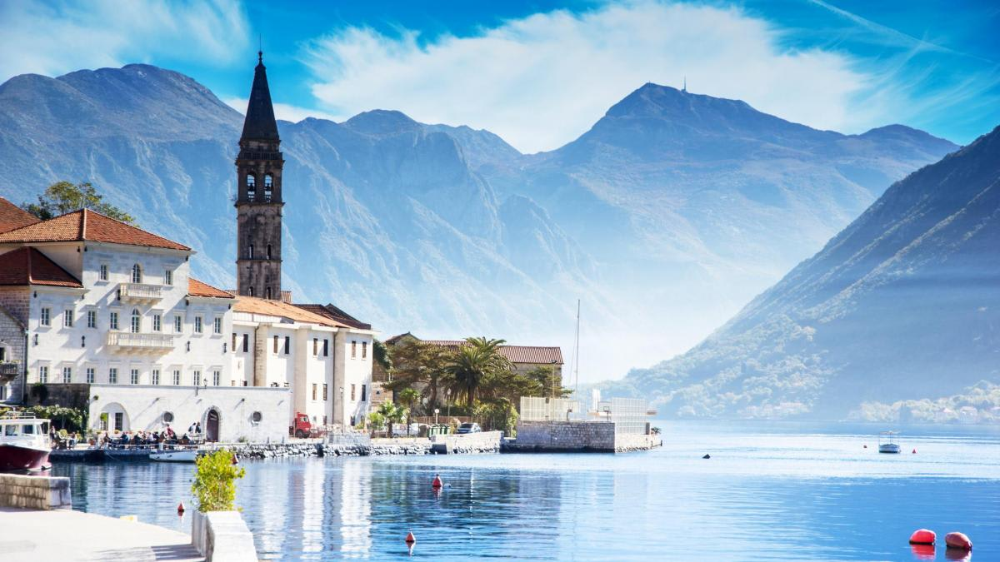

Isla Mauricio

Imagina llegar a esta playa al atardecer en Isla Mauricio: arena blanca como harina que no quema los pies, aguas turquesas tan claras que ves peces tropicales desde la orilla, y palmeras meciéndose con la brisa del océano Índico. Este paraíso africano combina relax absoluto con snorkel en arrecifes de coral vibrantes, catamaranes al amanecer para ver delfines, y caminatas por parques nacionales con cascadas escondidas. Prueba la gastronomía criolla fusionada con influencias indias y francesas: curries picantes, langostas frescas y ron local en chiringuitos playeros. En 2026, sigue siendo tendencia por su clima cálido todo el año (25-30°C), hoteles sostenibles de lujo accesible y vuelos directos desde Europa en unas 10 horas. Perfecto para desconectar 100% o combinar playa con aventura suave.
Montenegro

En la bahía de Kotor, Patrimonio UNESCO, te recibe un fiordo montañoso con aguas esmeralda, pueblos medievales de casas rosadas trepando colinas y un campanario que parece sacado de un cuadro renacentista. Alquila un coche para un road trip épico: recorre la serpenteante carretera de Pjevlja, para en playas de guijarros cristalinos como Sveti Stefan (una isla-hotel de postal), y sube al Lovćen para vistas panorámicas que cortan el aliento. Cultura viva con monasterios ortodoxos antiguos, vinos locales y festivales de verano; aventura con kayak en la bahía o rafting en el río Tara. En 2026, destaca por su bajo coste (hoteles boutique desde 80€/noche), naturaleza virgen sin masas turísticas y accesibilidad desde España (vuelos low-cost + coche). Ideal para amantes de paisajes dramáticos y historia balcánica